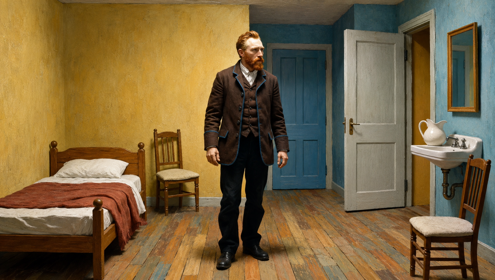

Double page 002 - Post-impressionnisme

Notice de catalogue
Autoportrait
Vincent van Gogh
Contexte historique
Van Gogh peint cet autoportrait pendant ses années parisiennes, lorsqu'il découvre l'impressionnisme, le néo-impressionnisme, les estampes japonaises et les théories modernes de la couleur. Le portrait se construit par énergie plus que par fini académique.
Biographie de l'artiste
Vincent van Gogh utilise l'autoportrait par nécessité autant que par expérimentation. Ne pouvant pas souvent payer des modèles, il observe son propre visage et transforme cette contrainte en journal visuel intense.
Palette de couleurs
Le portrait vibre par contrastes complémentaires : cheveux et barbe rouge-orange face à un environnement bleu-vert, avec des marques jaunes, roses, turquoise et brun-violet dans la surface.
Touche picturale
Des touches courtes et directionnelles construisent le visage, la veste et le fond. Elles ne décrivent pas seulement les formes : elles donnent à l'image une tension alerte et psychologique.
Composition
La tête est tournée en trois quarts tandis que le regard rencontre directement le spectateur. La veste sombre stabilise le bas de l'image, alors que le fond actif pousse autour de la figure.
Regarder de près
- Suivez le changement de direction des touches autour du front, de la joue et de la barbe.
- Comparez la barbe rouge-orange avec le fond bleu-vert.
- Observez comment le fond paraît actif plutôt que vide.
Chronologie
- 1853 Van Gogh naît à Zundert, aux Pays-Bas.
- 1886 Il s'installe à Paris et étudie la couleur moderne.
- 1887 Il peint de nombreux autoportraits expérimentaux.
- 1888 Il quitte Paris pour Arles, où sa couleur s'intensifie encore.
Interprétations numériques

